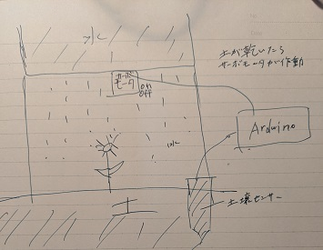
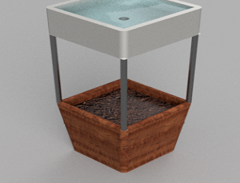
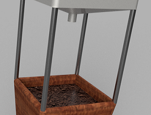
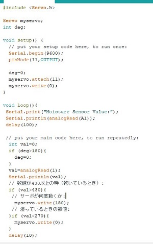
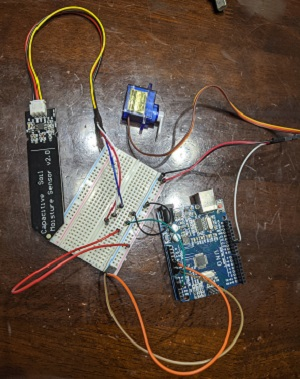

６月は土壌センサーがうまく動かず中途半端で終わってしまった。
7月はプランタの自動水やりを完成させるところまでいきたい。
モイスチャーセンサーが数値変化することが分かった。
しかしどうやって自動水やりをする仕組みができるか正直わからない。プランターに水をためるタンクを設置しモーターで吸い上げるというやり方はすでにありそうなので、今までの知識を生かし、違うやり方でやりたいと思う。
Arduinoで学んだ知識はLチカ、光センサー、モーターくらいなのでどうにかそれを生かし水やり装置を作ることにする。
絵がわかりずらいですが

プランターを積み上げ式にして上に水を貯水しておく仕組みにする。土壌センサーで土が乾いたらサーボモーターが作動するようにする。土が湿ったらサーボモータを停止させるプログラムを作る。

fusionでのイメージはこんな感じ
上に水をため乾いたら上から水を落とす。

Aruduinoのプログラムに時間がかかった。分かる人が見たらぐちゃぐちゃなプログラムかもしれない。
新規にArduinoの勉強はしていないので再度、道用先生のArduinoを使ってみるを参考に復習した。

配線は製品のデータシートとArduinoを使ってみるを参考に配線をした。
プログラム、配線共に動作することが分かったので発表までに物を作成する
出来上がった後動画や画像を添付
水の自動やり機能が完成後、光の構造に移りたい。鳥居君の発表を聞き野菜を育てるには様々な光の色が関係していると分かった。